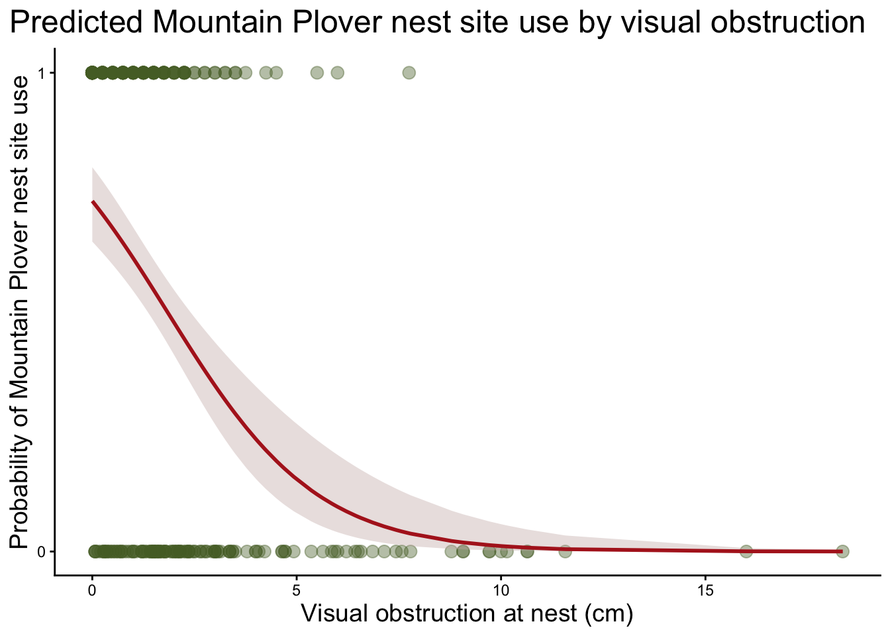
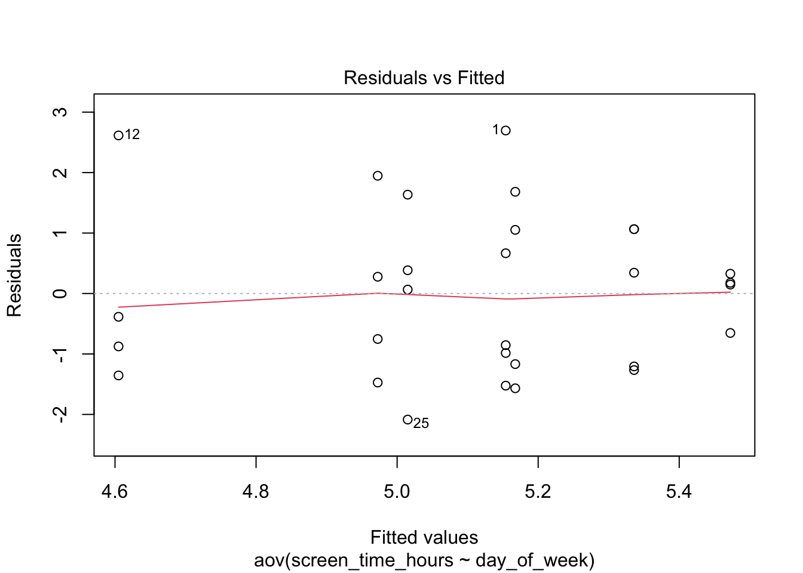
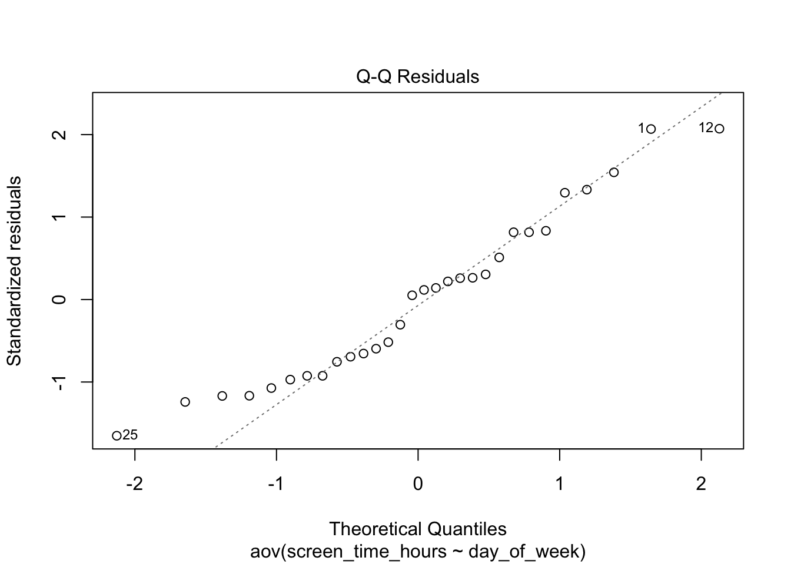
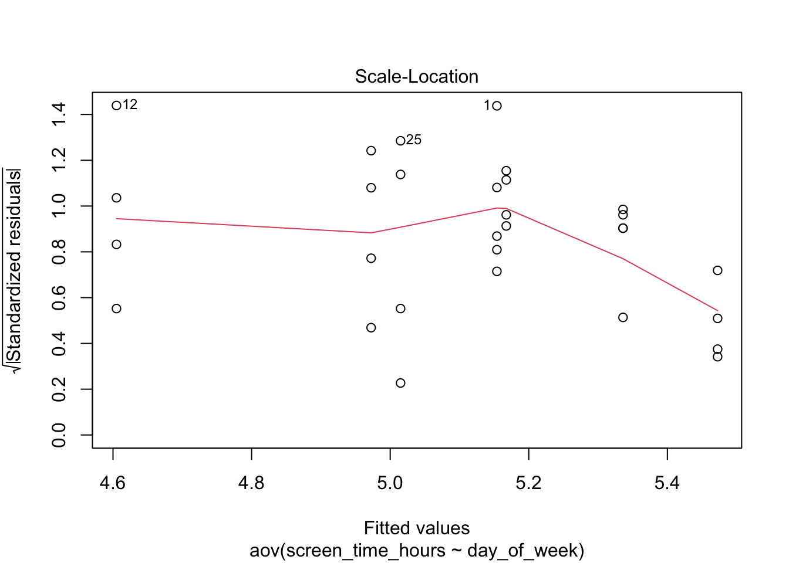
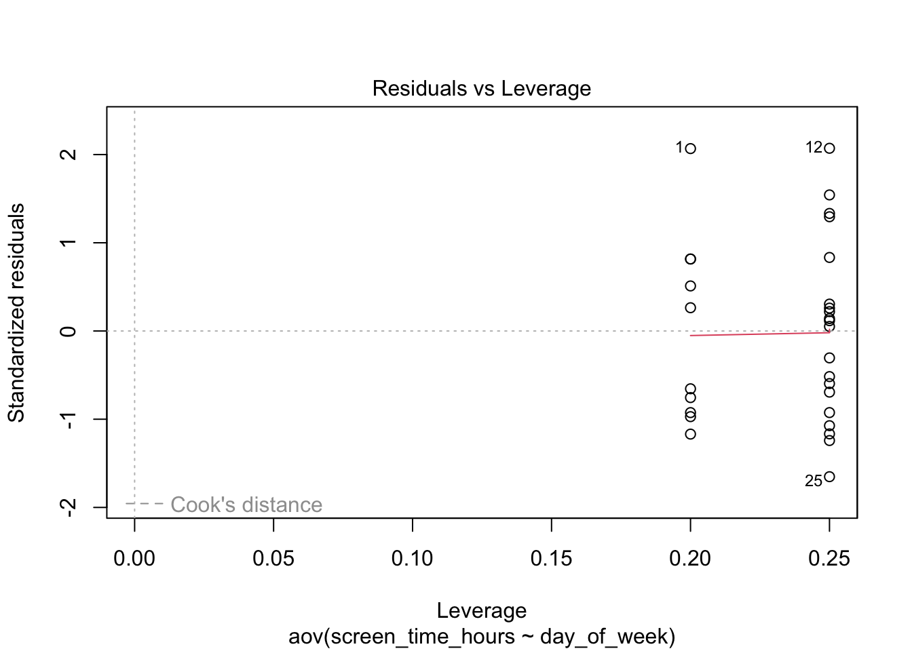
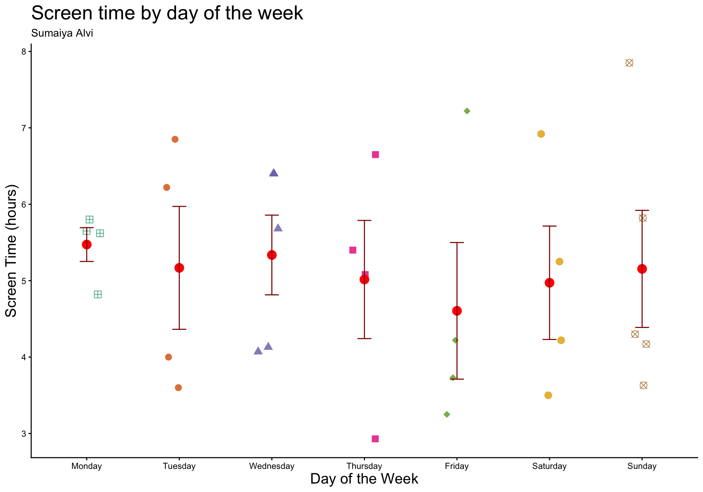

library(tidyverse) #general use
library(dplyr) #cleaning help
library(here) #file organization
library(janitor) #cleaning data frames
library(readxl) #reading excel files
library(DHARMa) #for simulated residuals
library(ggeffects) #for model predictions
library(car) #to run levene test
library(effectsize) #to calculate effect size
kelp <- read_csv(
here(
"data", #data folder
"Annual_Kelp_All_Years_20250903.csv" #kelp data
))
screentime <- read_csv(
here(
"data", #data folder
"screentime.csv" #personal data
))
mopl <- read_csv(
here(
"data", #data folder
"MOPL_nest-site_selection_Duchardt_et_al._2019.csv" #mountain plover data
)) ENV S 193DS Final
Set up
Problem 1. Research Writing
a. Transparent statistical methods
In part 1, they used a univariate general linear model to examine the relationship between precipitation and flooded wetland area.
In part 2, they used a one-way analysis of variance (ANOVA) to test whether flooded wetland area differed across the water year classifications.
b. Figure needed
A useful figure for the one-way ANOVA would be a boxplot showing flooded wetland area across water-year classifications. The x-axis should show the water year classification categories (wet, above normal, below normal, dry, and critical drought). The y-axis should show flooded wetland area (m²). Each boxplot would represent the distribution of flooded wetland area within each classification. Individual data points could also be added as jittered points to show the spread of the observations for each category. This figure would help readers visually compare flooded wetland area across the different water year classifications and better understand the results of the ANOVA test.
c. Suggestions for rewriting
We did not find strong evidence that precipitation predicts flooded wetland area in the San Joaquin River Delta (univariate general linear model; test statistic = unknown; \(\alpha\) = significance level; \(p\) = 0.11). Flooded wetland area also did not appear to differ across water year classifications (wet, above normal, below normal, dry, critical drought), which we visualized with a boxplot comparing flooded wetland area across categories (one-way ANOVA; test statistic = unknown; df = unknown; \(\alpha\) = significance level; \(p\) = 0.12).
d. Interpretation
One additional variable that could influence flooded wetland area is water salinity, which is a continuous variable. Higher salinity levels may make water less suitable for maintaining wetland habitat, so land managers may choose not to flood or maintain wetlands when salinity is high, which could reduce the flooded area.
Problem 2. Data visualization
a. Cleaning and summarizing
kelp_clean <- kelp |>
# function 3:
# make all column names lowercase and consistent
clean_names() |>
# function 6
# keep only the relevant observations
filter(site %in% c("IVEE", "NAPL", "CARP")) |>
# function 1
# remove the specific observations that meet all 3 of these criteria
filter(!(date == "2000-09-22" & transect == "6" & quad == "40")) |>
# function 8
# create new site_name column with full site names
mutate(site_name = case_when(
site == "NAPL" ~ "Naples",
site == "IVEE" ~ "Isla Vista",
site == "CARP" ~ "Carpinteria"
)) |>
# function 2
# convert site_name to a factor and set the 3 factor levels
mutate(site_name = as_factor(site_name),
site_name = fct_relevel(site_name,
"Naples", "Isla Vista", "Carpinteria")) |>
# function 5
# group data by site_name and year
group_by(site_name, year) |>
# function 7
# calculate the mean number of fronds for each site-year combination
summarize(mean_fronds = mean(fronds)) |>
# function 4
# remove the grouping by site_name and year
ungroup()
kelp_clean %>%
slice_sample(n = 5)# A tibble: 5 × 3
site_name year mean_fronds
<fct> <dbl> <dbl>
1 Isla Vista 2005 18.9
2 Naples 2011 5.32
3 Carpinteria 2017 13.4
4 Naples 2017 4.74
5 Isla Vista 2023 3.78str(kelp_clean)tibble [77 × 3] (S3: tbl_df/tbl/data.frame)
$ site_name : Factor w/ 3 levels "Naples","Isla Vista",..: 1 1 1 1 1 1 1 1 1 1 ...
$ year : num [1:77] 2000 2001 2002 2003 2004 ...
$ mean_fronds: num [1:77] 1.8947 0.0606 3.0111 9.2596 7.8141 ...b. Understanding the data
The value for fronds in transect 6, quad 40 on 2000-09-22 is -99999, which represents a missing value rather than an actual count of kelp fronds. According to the dataset information in the Files and Data Links section, the code -99999 indicates that data is missing, so this observation is removed before analysis.
c. Visualize the data
ggplot(
# using cleaned kelp data
data = kelp_clean,
aes(
x = year, # setting x and y axes as year and mean fronds
y = mean_fronds,
color = site_name # color to show which site the data is from
)) +
# adding a line connecting yearly means for each site
geom_line(
linewidth = 0.8,
alpha = 0.9) +
# adding points for each year
geom_point(
size = 2,
alpha = 0.9) +
# adding plot title and axis labels
labs(
x = "Year",
y = "Mean kelp fronds per year",
title = "Sites vary in mean kelp fronds per year",
color = "Site") +
# changing colors for each site from default
scale_color_manual(
values = c(
"Naples" = "steelblue",
"Isla Vista" = "firebrick",
"Carpinteria" = "darkolivegreen")
) +
# grid panel with no border
theme_minimal() +
theme(
# using a custom font that is consistent across all text
text = element_text(family = "Courier"),
# adjusting title size and position
plot.title = element_text(size = 13, hjust = 0.5),
# adjusting legend text
legend.title = element_text(size = 11),
legend.text = element_text(size = 10)
)
d. Interpretation
- Isla Vista shows the most variation in mean kelp fronds per year. The red line moves up and down a lot across the y-axis over time, ranging from about 5 fronds to nearly 40 fronds across the years on the x-axis.
- Carpinteria shows the least variation in mean kelp fronds per year. The green line stays more stable across the plot, with values mostly between about 3 and 13 fronds and smaller changes along the y-axis across the years.
Problem 3. Data analysis
a. Response variable
In this dataset, the response variable represents whether a location was used as a Mountain Plover nest site. A value of 1 (used) indicates that the site was occupied by a nesting Mountain Plover, while 0 (available) indicates a location that was available but not used for nesting.
b. Purpose of study
- Visual obstruction: Visual obstruction is a continuous variable because it measures the height of vegetation that blocks visibility at the nest. As visual obstruction increases, the probability of Mountain Plover nest site use would likely decrease because plovers tend to avoid areas with taller or denser vegetation and prefer more open habitat with shorter vegetation and exposed ground. This information is discussed in the Discussion section, paragraph 4, where the authors explain that plovers avoided nesting in areas with greater vegetation height and visual obstruction.
- Distance to prairie dog colony edge: Distance to the prairie dog colony edge is a continuous variable because it measures how far a nest site is from the colony boundary. As distance from the colony edge increases, the probability of Mountain Plover nest site use would likely decrease because nesting closer to colony edges may allow adults easier access to resources such as taller vegetation than the colony that can provide protection for chicks. This idea is discussed in the Discussion section, paragraph 3, where the authors explain how distance to colony edge influenced plover presence and nesting behavior.
c. Table of models
| Model | Visual obstruction | Distance to prairie dog colony | Model description |
|---|---|---|---|
| 1 | No | No | Null model |
| 2 | Yes | No | Model with visual obstruction only |
| 3 | No | Yes | Model with distance to colony edge only |
| 4 | Yes | Yes | Saturated model with both predictors |
d. Run the models
# Create cleaned dataset
mopl_clean <- mopl |>
clean_names() |>
#create binary response variable from id column
mutate( used_bin = ifelse(id == "used", 1, 0)) |>
#keep only the necessary variables
select(used_bin, edgedist, vo_nest)
# Run the models (logistic regression)
# Model 1: Null model (intercept only)
mod1 <- glm(used_bin ~ 1, data = mopl_clean, family = binomial)
# Model 2: Visual obstruction only
mod2 <- glm(used_bin ~ vo_nest, data = mopl_clean, family = binomial)
# Model 3: Distance to colony edge only
mod3 <- glm(used_bin ~ edgedist, data = mopl_clean, family = binomial)
# Model 4: Saturated model (both predictors)
mod4 <- glm(used_bin ~ vo_nest + edgedist, data = mopl_clean, family = binomial)e. Select the best model
# Compare models using AIC
AIC(mod1, mod2, mod3, mod4) df AIC
mod1 1 384.6172
mod2 2 331.7690
mod3 2 386.0911
mod4 3 333.7410The best model as determined by Akaike’s Information Criterion (AIC) included visual obstruction at the nest as a predictor of Mountain Plover nest site use (model 2, AIC = 331.769). This model had the lowest AIC value compared to the null model, the model with distance to prairie dog colony edge, and the model including both predictors.
f. Check the diagnostics
# look at the diagnostics using DHARMa
plot(simulateResiduals(mod2))
The DHARMa diagnostic plot suggests that the model assumptions are met. The KS test indicates that the residuals follow a uniform distribution, the dispersion test shows no evidence of overdispersion, and the outlier test indicates no influential outliers.
g. Visualize the model predictions
# generate predicted probabilities and 95% confidence intervals
pred_data <- ggpredict(mod2, terms = "vo_nest [all]")
# plot the underlying data and model predictions
ggplot(mopl_clean,
aes(x = vo_nest,
y = used_bin)) +
# add the observed 0/1 nest-use data
geom_point(size = 3,
alpha = 0.4,
color = "darkolivegreen") +
# add the 95% confidence interval ribbon around predictions
geom_ribbon(data = pred_data,
aes(x = x,
y = predicted,
ymin = conf.low,
ymax = conf.high),
fill = "mistyrose3",
alpha = 0.4) +
# add the predicted probability line
geom_line(data = pred_data,
aes(x = x,
y = predicted),
color = "firebrick",
linewidth = 1,
inherit.aes = FALSE) +
# clear axis labels and title
labs(
x = "Visual obstruction at nest (cm)",
y = "Probability of Mountain Plover nest site use",
title = "Predicted Mountain Plover nest site use by visual obstruction"
) +
# keep probabilities between 0 and 1
scale_y_continuous(limits = c(0, 1),
breaks = c(0, 1)) +
# remove gridlines
theme_classic() +
theme(
plot.title.position = "plot", # keep title aligned with plot
plot.title = element_text(size = 18), # set title size
axis.title = element_text(size = 14)
)
h. Write a caption for your figure
Figure 3. Predicted Mountain Plover nest site use by visual obstruction. The points show observed nest site use (1 = used, 0 = available) plotted against visual obstruction at the nest. The solid line represents the predicted probability of nest site use from the logistic regression model, and the shaded region shows the 95% confidence interval around the prediction. Data source: Duchardt, Courtney; Beck, Jeffrey; Augustine, David (2020). Data from: Mountain Plover habitat selection and nest survival in relation to weather variability and spatial attributes of Black-tailed Prairie Dog disturbance [Dataset]. Dryad. https://doi.org/10.5061/dryad.ttdz08kt7
i. Calculate model predictions
# set visual obstruction = 0
pred_vo0 <- ggpredict(mod2, terms = "vo_nest [0]")
# display the predicted probability and 95% confidence interval
pred_vo0# Predicted probabilities of used_bin
vo_nest | Predicted | 95% CI
--------------------------------
0 | 0.73 | 0.65, 0.80j. Interpret your results
The predicted probability of Mountain Plover nest site occupancy when visual obstruction is 0 is about 0.73 (95% CI: 0.65–0.80). The figure shows that the probability of nest site use decreases as visual obstruction increases, which indicates that plovers prefer more open areas with little vegetation. Distance to prairie dog colony edge did not appear to strongly influence occupancy because the best model only included visual obstruction as a predictor. Biologically, this pattern makes sense because as the paper explains, Mountain Plovers might prefer open habitats with low vegetation where they can better detect predators and blend into the ground.
Problem 4. Affective and exploratory visualizations
a. Comparing visualizations
- How are the visualizations different from each other in the way you have represented your data?: The exploratory visualizations mainly show simple relationships in the data, such as screen time by day of the week and the relationship between class/study time and screen time. The affective visualization represents many variables at once using shapes, fill patterns, outlines, and symbols to show screen time, class/study time, social plans, exams, and sleep. This makes it more detailed and visually complex than the exploratory plots.
- What similarities do you see between all your visualizations?: All of the visualizations represent the same underlying data about my daily activities and screen time. They each show patterns related to how my screen time varies with things like study time or daily schedules.
- What patterns do you see in each visualization? Are these different between visualizations?: The exploratory plots suggest that my screen time tends to be slightly lower on days with more class or study hours, while higher screen time often occurs when I have less work to do. The affective visualization shows a similar pattern, where days with high class/study time usually have shapes representing medium screen time, not higher. The patterns are mostly the same across visualizations, but the affective visualization highlights additional context like social plans, exams, and sleep that may also influence screen time.
- What kinds of feedback did you get during week 9 in workshop?: The feedback I received during week 9 was mostly similar to changes I was already planning to make. My peers suggested adding color to represent stress levels, making the icons larger, and finding a clearer way to show social plans. One classmate also suggested using a phone as the background, which I liked and am going to implement because it fits well with the theme of screen time.
b. Designing an analysis
One analysis that could be used is a one-way ANOVA to test whether my mean screen time differs across days of the week. This analysis is appropriate because my research question examines whether the amount of time spent on my phone changes depending on the day, specifically in relation to my schedule for the day. Screen time is a continuous response variable measured in hours, while day of the week is a categorical predictor variable, which makes ANOVA a suitable method for comparing mean screen time across different days.
c. Check any assumptions and run your test
Fit the model
# cleaning and organizing personal data
screentime <- screentime |>
clean_names() |>
mutate(day_of_week = factor(day_of_week,
levels = c("Monday", "Tuesday", "Wednesday",
"Thursday", "Friday", "Saturday",
"Sunday")))
# fit the ANOVA model
anova_mod <- aov(screen_time_hours ~ day_of_week, data = screentime)
# view residual diagnostics
plot(anova_mod)



Check assumptions
Check 1: Normality of residuals
# Shapiro-Wilk test for normality
shapiro.test(residuals(anova_mod))
Shapiro-Wilk normality test
data: residuals(anova_mod)
W = 0.95131, p-value = 0.1833Check 2: Equal variances across groups
# using leveneTest() from cars package
leveneTest(screen_time_hours ~ day_of_week, data = screentime)Levene's Test for Homogeneity of Variance (center = median)
Df F value Pr(>F)
group 6 0.5242 0.784
23 The assumptions of the ANOVA appear to be met. The residual diagnostic plots did not show any clear patterns or strong deviations from normality, suggesting that the residuals are approximately normally distributed. Additionally, the test for equal variances indicated that the variance in screen time is similar across days of the week. Therefore, the assumptions required to run the one-way ANOVA are reasonably satisfied.
Run ANOVA analysis
# run the one-way ANOVA
summary(anova_mod) Df Sum Sq Mean Sq F value Pr(>F)
day_of_week 6 1.94 0.3226 0.152 0.987
Residuals 23 48.88 2.1253 Calculate effect size
#using eta_squared from effectsize package
eta_squared(anova_mod)# Effect Size for ANOVA
Parameter | Eta2 | 95% CI
---------------------------------
day_of_week | 0.04 | [0.00, 1.00]
- One-sided CIs: upper bound fixed at [1.00].d. Create a visualization
ggplot(
# using screentime dataset
data = screentime,
# day of week on x-axis and screen time on y-axis
aes(x = day_of_week,
y = screen_time_hours)
) +
# plotting the underlying observations
geom_jitter(
# different color and shape for each day
aes(color = day_of_week,
shape = day_of_week),
# jitter points horizontally
width = 0.15,
# don't jitter vertically
height = 0,
alpha = 0.8,
size = 3
) +
# displaying mean for each day
stat_summary(
# show mean as points
geom = "point",
# calculating mean
fun = mean,
# resizing the points
size = 4,
color = "red"
) +
# displaying standard error for each day
stat_summary(
# computing mean and standard error
fun.data = mean_se,
# plotting error bars
geom = "errorbar",
# setting error bar width
width = 0.15,
# making error bars thicker
linewidth = 0.5,
# change error bar color
color = "darkred"
) +
# using custom colors (non-default)
scale_color_brewer(palette = "Dark2") +
# using custom shapes
scale_shape_manual(
values = c(12, 16, 17, 15, 18, 19, 13)
) +
# adding a title, subtitle, and relabeling axes with units
labs(
# plot title
title = "Screen time by day of the week",
# subtitle
subtitle = "Sumaiya Alvi",
# x and y axes labels
x = "Day of the Week",
y = "Screen Time (hours)"
) +
# removing gridlines and changing theme for white background
theme_classic() +
# removing legend
theme(legend.position = "none",
plot.title = element_text(size = 20),
axis.title = element_text(size = 15)
)
e. Write a caption
Figure 1. Screen time by day of the week Each point represents the observed screen time (hours) recorded for a specific day, with different colors and shapes used to distinguish the days of the week. Jittered points show the underlying data, while the red circles indicate the mean screen time for each day and the dark red vertical error bars represent the standard error around the mean.
f. Write about your results
The one-way ANOVA showed that mean screen time did not differ significantly across days of the week (\(F(6,23)=0.152, p=0.987\)). Average screen time was relatively similar across all days, with the means clustering around about 4.5–5.5 hours per day. The effect size was small (\(\eta^2=0.04\)), which means that only about 4% of the variation in screen time can be explained by the day of the week. Overall, this suggests that the day of the week has little influence on my screen time in this dataset.